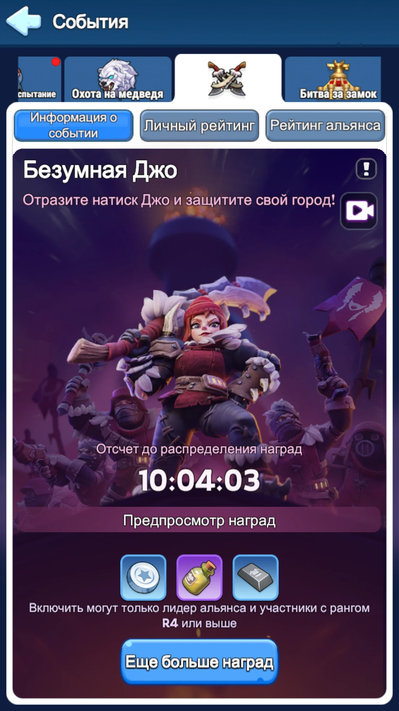
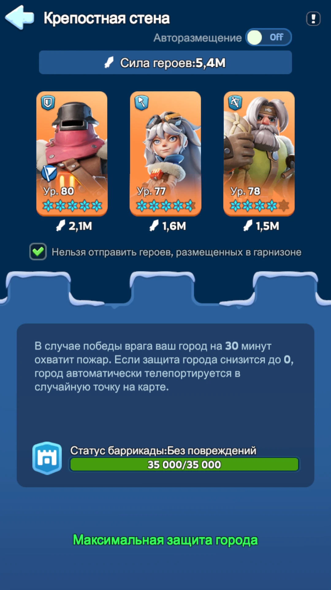

Не отправляйте войска случайно. Заранее решите, кого вы укрепляете и кто укрепляет вас. Особенно это важно для схемы без страховки, где дома почти не остаётся собственных войск.
Если союзник уже дважды не отбил волну, отзывайте из него свои марши и переносите их в города, которые ещё продолжают принимать Джо.

1. Как устроена Джо
Смысл события — переживать последовательные атаки Джо и одновременно зарабатывать очки на защите союзников. Поэтому самый результативный вариант обычно не «сидеть всей армией дома», а обмениваться подкреплениями внутри альянса.
Должен получить надёжное подкрепление от союзников. Чем меньше собственные войска забирают убийства, тем больше работы остаётся подкреплению.
Распределяются по городам союзников. Не складывайте все войска в один город без причины — полезнее закрыть несколько участников.
Во время события не лечите их автоматически. Вылеченные войска возвращаются домой и могут начать забирать убийства у подкреплений.
2. Две рабочие схемы обмена войсками
Обе схемы рабочие. Выбор зависит от того, насколько вы уверены в подкреплении своего города.
Пехота и копья — союзникам, лучники — дома
Более безопасная схема, если вы не уверены, что союзные подкрепления полностью закроют ваш город.
- Пехоту и копейщиков делим примерно равномерно между всеми доступными маршами и отправляем союзникам.
- Лучники остаются дома и подключаются к обороне только если укрепившие вас союзники не справляются.
- Не нужно набивать один марш пехотой, а другой копьями: задача — равномерно распределить полезные войска по нескольким городам.
Рассылаем все войска без исключения
Схема даёт больше пространства подкреплениям, но требует надёжного обмена с союзниками.
- Пехота, копейщики и лучники распределяются по маршам и отправляются в чужие города.
- Ваш город должен получить надёжное подкрепление. Без него вы просто начнёте проваливать волны.
- Основные герои остаются в вашем городе в стене. Они не уезжают вместе с маршами и продолжают усиливать оборону.
Закрепите героев стены
До начала события вручную поставьте сильнейших защитных героев в стену и проверьте их снаряжение.
Разделите войска по всем маршам
Не держите лишний марш дома. В схеме со страховкой дома остаются только лучники; без страховки — никого.
Получите подкрепление в ответ
Для схемы без страховки это обязательное условие. Лучше заранее знать, кто именно закрывает ваш город.
Перебрасывайте марши по ходу события
Если город союзника уже дважды провалил защиту и перестал принимать обычные волны, переносите войска туда, где они ещё могут приносить очки.
3. Волны, которые нужно помнить
4. Какие войска обычно дают больше очков
Пехота стоит впереди и начинает наносить урон раньше остальных. На ранних и средних волнах противник часто погибает до того, как задние ряды успевают полностью реализовать урон. Поэтому при ограниченной вместимости маршей пехота и копейщики обычно приоритетнее лучников для подкреплений.
5. Герои стены и подкрепления
